All frames 24 x 32, facing right, existing palette indices only. Strips and GIFs at 4x. Walk speed 1.4 px per frame (60 fps ticks). Move GIFs show one GIF frame per tick at 20 ms, so they run at 0.83x real speed.
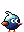
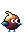
Cycle 12 ticks, stride 16.8 px (8.4 px per step). Grounded waddle, 1 px bob, quiff and gum wad lag one frame.
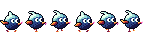
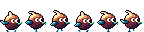
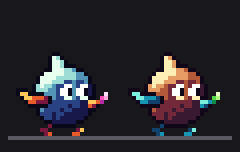
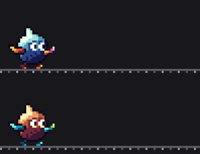
Cycle 12 ticks, stride 16.8 px. Contact, down, pass, up for both feet; wing swings opposite the near foot.
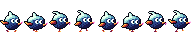
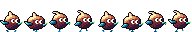
Cycle 16 ticks, stride 22.4 px (11.2 px per step). Bouncy hop-walk with drawn squash on contact and stretch on push-off; feet planted only on contact and push frames.
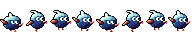
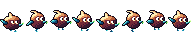
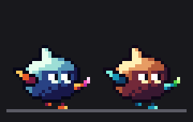
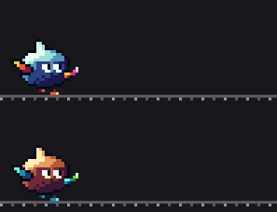
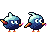
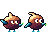
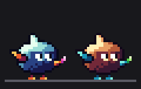
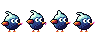
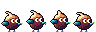
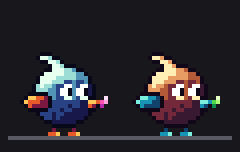
The game shows frame 0 of the flap clip on the ground while gum is carried (two bubbles: flap with two bubbles; one bubble: flap with one bubble), so the approved walk C, landing and breathing get one version per gum state. No gum is the gumless drafts above. The bubble is the sheet's own grid, letters and outline; it trails the body by one frame, squashes one row the frame after a touchdown, trails the walk by one pixel and sways (the pair rocks one row per step). No gum wad at the beak while gum is carried, as in the flap frames. GIFs run at game speed (walk 3 ticks per frame, landing 9 and 12, breathing 36, 15, 21, 15; the landing GIF pauses 0.7 s before repeating). Player left, rival right in each GIF. Generator: draw_walk_gum.py, numbers: measure_gum.txt, full sheet: walk_gum_sheet_draft.png.
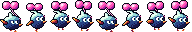
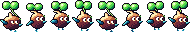
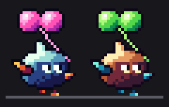
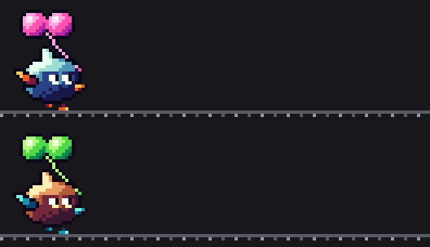
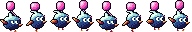
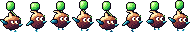
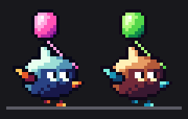
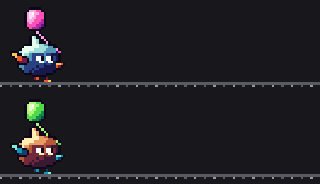
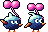
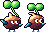
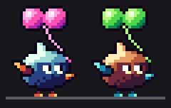
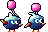
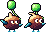
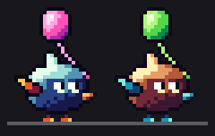
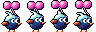
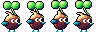
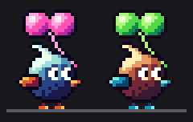
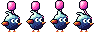
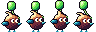
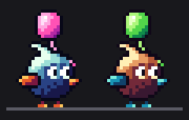
44 new 16 x 16 C-ROM tiles for all six gum clips together (two bubbles 28, one bubble 24, overlap shared), after deduplication against the current sheet and the gumless drafts. Rival reuses the player tiles.
C. Air time covers distance, so only two planted frames must match ground speed; cadence is slower (16 ticks); squash and stretch suit a floaty bird. B is the smoother grounded alternative. A is the cheapest in tiles.
Full sheet of all frames: walk_sheet_draft.png. Per-frame measurements: measure.txt.